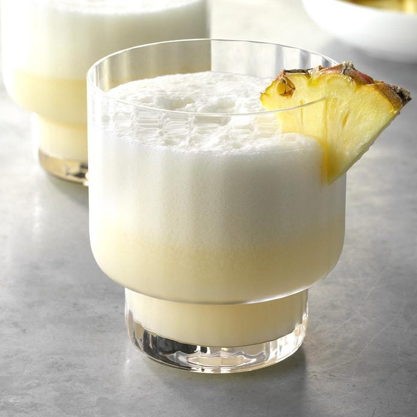

Pina Colada

Velvety-smooth texture and a taste of the tropics are
what this tropical drink delivers. The easy-to-make Pina
Colada recipe can be mixed and chilled ahead of time.
When ready to serve, just blend for a creamy and delicious
beverage.
Ingredients:
- Pineapple juice
- Coconut Cream
- Rum
Steps:
-
In a 2-qt. pitcher:
- combine 2-1/4 cups pineapple juice
- add 1 can cream of coconut
- add 1-1/2 cups rum
- Chill
- Add 2 teaspoons of lemon juice
- For each serving, place a generous cup
of rum mixture and 1 cup ice in a blender
- Cover and process until smooth
- Pour into a chilled hurricane glass
- Garnish with a pineapple wedge